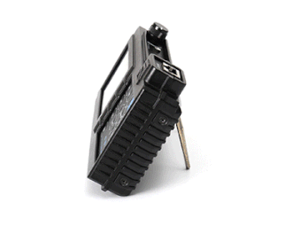

")
NEW! ST-301 “SPIDER“ - Wireline Analyzer
Wire lines analyzer ST-301 “Spider” is designed to detect and locate eavesdropping devices, galvanically connected to power and low-current wire lines in the inspected object. The analyzer uses both passive and active modes of operation. This allows detecting eavesdropping devices which are in active or in stand-by mode at the time of a sweep operation.

Modes of operation
• Low frequency amplifier.
• Wired receiver.
• Wired Non-linear junction detector.
• Reflectometer.
Functional capabilities:
• Detection and analysis of signals from cable (dynamic and electret) microphones in low-current wire lines;
• Activation of electret cable microphones by applying an in-line BIAS voltage for their detection
• Detection of eavesdropping devices signals, which are transmitting information via power and lowcurrent lines in the frequency range of 100 kHz...180 MHz;
• Detection and evaluation of unauthorized galvanic connections to wire lines in the modes of non-linear junction detector and reflectometer;
• Measurement of direct and alternating voltage in the tested line.
The analyzer has an integrated electronic switch, which is designed to increase the efficiency of multiwire cable testing.
Automatic and manual modes of electronic commutator control allow connecting all combinations of wire pairs of the tested multi-wire cable that connects to the input connector of the switch. Automatic mode of operation and electronic commutator allow executing the various types of measurements in all combinations of multi-wire cables pairs for several seconds. Adapters, switches and cables, which are included in the kit, allow connecting the device to the most common types of wire lines.
Use of automated mode of analyzer, in combination with electronic switch, allows to carry out various kinds of measurements on all the possible combinations of pairs of multi-wire cable in a few seconds. Adapters, couplers and cables, which are included in the ST-301 SPIDER delivery set, allows to connect the device to the most common types of wired lines.

| Characteristics: | |
| LOW FREQUENCY AMPLIFIER (LFA) | |
| Frequency range, Hz | 20 - 25000 |
| Input resistance, kOhm | 200 |
| Adjustment range of gain, dB | 0-60 |
| The maximum signal amplitude on an input, V | 10 |
| Spectral density of noise voltage, nV/Hz | 6 |
| Bias voltage values, V | 0, ±5, ±10, ±15, ±20, ±26 |
| Form of representation of a signal | Oscillogram, Spectrogram |
| Measurement range on a direct current, V | ±80 |
| WIRE RECEIVER (WR) | |
| Frequency range, MHz | 0.1 - 180 |
| Time of scanning of all range, sec | 0.3 - 1 |
| Minimum level of detected signal in AUTOMATED mode, dBm | -60 |
| Dynamic range, dB | 50 |
| Input resistance, Ohm | 50 |
| Demodulation | AM, FM |
| Bandwidth of the filter, kHz | 180 |
| The maximum allowed voltage in the cable, V | 250 (AC),80 (DC) |
| Data representation form | Spectrogram, Oscillogram, Table. |
| NON-LINEAR JUNCTION DETECTOR (NLJD) | |
| Level (amplitude) of the probing signal, V | ±14 |
| Frequency of the probing signal, Hz | 60 |
| Separate indication of even and odd harmonics | yes |
| Minimum detectable level of non-linear distortion, % | 0.1 |
| REFLECTOMETER (REF) | |
| Range of distances, m | 3 - 150 |
| Error of measurements, m | ±0,6 |
| The ability to work on cables under voltage | no |
| POWER SUPPLY | |
| The built-in lithium-polymer accumulator, V | 3.7 |
| Power consumption, W | <1 |
| Operating time at the maximum power consumption, hour | >3 |
| Charging interval of completely discharged accumulator, hour | 5 |
| WEIGHT AND DIMENSIONS | |
| Dimensions of the main unit (length, width, height), mm | 165 x 98 x 40 |
| Mass of the main unit, kg | 0.47 |
| Packaging dimensions (length, width, height), mm | 390 x 310 x 170 |
| Mass of the kit in packaging, kg | 4.4 |
pdf
pdf

{kind=link}
{kind=link}
{kind=link}
{kind=link}
{kind=link}
{kind=link}
{kind=link}
{kind=link}